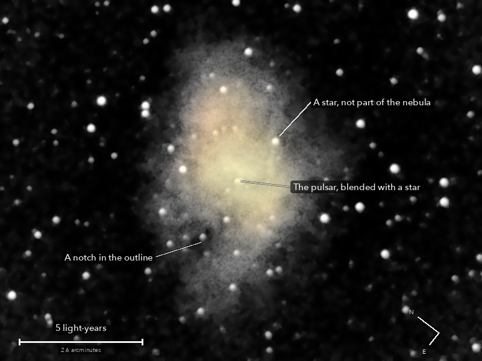

The Crab Nebula
Messier 1, the wreck of an exploded star in Taurus
What is left of a star that blew itself apart. Astronomers in China saw the explosion in 1054: a new star bright enough to see in daylight for three weeks. The cloud is still flying outward at about 1,500 km a second. At its centre is the collapsed core of the star, no bigger than a city, spinning about 30 times a second.
What you are looking at

Swipe sideways to see the rest. Tap the picture for full size.
- Distance
- About 6,500 light-years
- This picture spans
- 20 light-years; the nebula is about 13 long and 8 wide
- The light left
- Around 4500 BC, before writing was invented
- Honest note
- The lumpy, lopsided shape is real: two separate halves of the frames show the same shape. The nebula's famous red threads are not seen, so it has one warm colour here
For photographers
9.25 minutes of light on one field, against one minute on 8 October.
- Exposures
- 37 x 15 s at ISO 3200: 9.25 minutes
- Frames
- 41 taken, 37 kept. The first after the slew was dropped by rule; two were smeared and one had wide stars. A few frames were slightly trailed by the unguided drive, every star stretched the same way: not out of focus. The stars dimmed 4 percent over the run; the frames are scaled and weighted for it
- Sampling
- 0.776 arcsec per pixel: one pixel per 2 x 2 colour cell, never enlarged. Stars 4.8 arcsec wide (half-flux), round
- Field
- 10.4 x 7.8 arcmin: an 800 x 600 crop round the catalogue place from a stack of 38.3 x 25.3 arcmin, nothing resampled, not turned (north 53 degrees anticlockwise of up)
- When
- 13 October 2026, after midnight, over 27 minutes. About 60 degrees up
- Field rotation
- 0.65 degrees over the run, because the polar axis is about 5 degrees off; corrected in registration (rotation and shift on about 200 stars, 0.32 to 0.48 sensor px rms)
- Calibration
- No darks and no flat frames were taken. The night's flat, built from the open sky of the NGC 891 run, and 133 dust shadows it left, measured on this run's own sky and divided out. The sky just round the nebula sits about 1 percent low, which trims the nebula's faintest edge a little. Hot pixels from the run itself
- Stacking
- RAW colour planes (no demosaic), hot pixels by 3 x 3 median, registered on stars with rotation, sigma-clipped weighted mean. One sky constant per colour per frame; in the picture only, a sky plane per colour is subtracted as well. Noise 5.5 to 5.7 times lower than one frame (6.1 expected from the weights)
- What is real
- The oval glow, 44 times the scatter of blank sky: half its central brightness at 3.1 x 2.0 arcmin, into the sky by 7.0 x 4.4. And the structure inside it: the odd and the even halves of the frames, band-passed, agree inside the nebula at 9 to 16 sigma over blank sky, at scales from 3 to 44 arcsec. On 8 October the same tests gave 1.4 and 3.5
- Not seen
- The red filaments as such: the red-excess test does not repeat between the halves (0.6, -0.1 and 0.9 sigma), and a stock camera passes little of their deep red. So the nebula is given one colour and no red web is drawn. The pulsar is not shown as a separate star: it and its 16th magnitude neighbour, about 5 arcsec apart, are one blob at this star size
- Finish
- Warm white, red : green : blue 1.10 : 1 : 0.83 in the camera's daylight white balance, core and rim alike. The colour comes from a 32 px average, so the stars are shown white: a side effect, not their colour. Arcsinh stretch, black at the 60th percentile, S-curve 0.15, no saturation added. The dark sky is set near black and smoothed (median 5 px, bilateral 5 px), by choice: 2.8 percent of the picture is exactly black
- Compared
- With 8 October's picture of it: 37 frames against 4, 9.25 minutes against 1, noise per pixel 5.9 DN against 38 in green for about the same nebula, stars 4.8 arcsec and round against 5.6 and stretched, and a flat this time. That picture had star colours; this one does not
- Telescope
- Celestron 8SE Schmidt-Cassegrain: 203 mm aperture, 2,083 mm focal length by plate solve of this stack, f/10.3
- Camera
- Sony a6000, stock, at prime focus: APS-C 23.5 x 15.6 mm, 6000 x 4000, 3.9 micron pixels, RAW
- Mount
- Sky-Watcher EQ6-R, unguided. Set down without polar alignment, about 5 degrees off the pole; aligned from four plate-solved photos (about 1 arcminute), both axes driven from that model
© 2026 Brad Gessler · Celestron 8SE (8 inch, f/10.3) and Sony a6000 on an EQ6-R · San Francisco Bay Area · night of 12 October 2026
Capture and mount: Observatory (Elixir on a Raspberry Pi 3). Stacking: numpy, OpenCV, rawpy. Plate solving: astrometry.net. Stacked from the camera's RAW frames. Nothing generated.
© 2026 Brad Gessler. The pictures and the words are his own; all rights reserved.